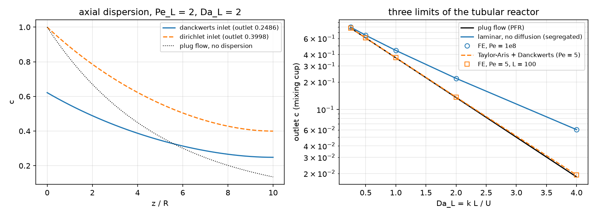
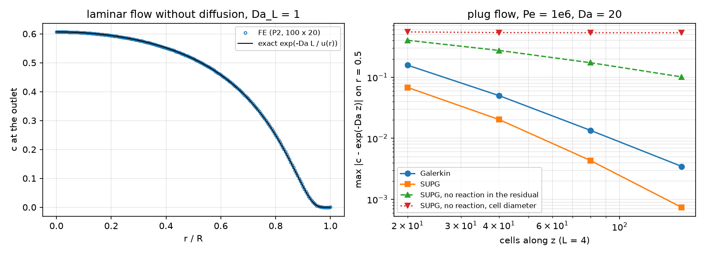
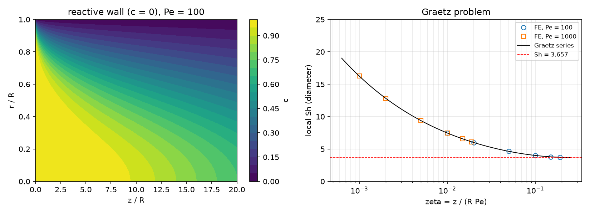
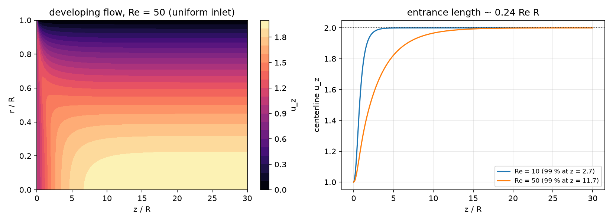

AI-based Materials and Process Simulation II
Week 12 — Reactive Flow: a Tubular Reactor — Dispersion, Laminar Flow, SUPG, the Graetz Problem and Navier–Stokes Coupling
Process Systems Laboratory
Department of Chemical and Biomolecular Engineering, SeoulTech
Today
| Part | Topic | Time |
|---|---|---|
| Quiz on Week 11 (closed-AI) | 10 min | |
| A | The tubular reactor — Pe, Da, Re; three exact limits; the mixing cup | 25 min |
| B | Axisymmetric weak form, the Danckwerts inlet, SUPG with a consistent residual | 30 min |
| C | Verification against the limits — dispersion, segregated flow, SUPG, Graetz | 35 min |
| D | Navier–Stokes in the tube (one-way coupling) · LLM pitfalls · HW11 | 25 min |
Lab: W12_lab.ipynb (≈ 80 min) · Homework: W12_HW11.ipynb (due before Week 13) · Applications: tubular and microchannel reactors, catalytic monoliths (reactive wall), chromatography and dispersion in pipes (AMPS I Week 13: SUPG on a slab — this week the tube, with reaction and a real velocity field)
Part A · The tubular reactor
The model
Axisymmetric tube of radius R and length L; lengths in units of R, velocities in units of the mean U:
\mathbf u\cdot\nabla c=\frac1{Pe}\Big(\partial_{zz}c+\partial_{rr}c+\frac1r\partial_rc\Big)-Da\,c^n,\qquad Pe=\frac{UR}{D},\quad Da=\frac{k\,R\,c_0^{n-1}}{U}.
- Velocity: plug (u_z=1), Poiseuille (u_z=2(1-r^2)), or steady Navier–Stokes from a uniform inlet (Re=UR/\nu) — one-way coupling: the flow does not feel c.
- Inlet z=0: feed c_0=1. Outlet z=L: no diffusive flux. Wall r=1: inert (\partial_rc=0) or instantaneous wall reaction (c=0). Axis r=0: nothing to impose.
- Reactor-scale groups: Pe_L=Pe\,L, Da_L=Da\,L (the plug-flow outlet is e^{-Da_L} for first order).
Three exact limits
| limit | model | outlet (first order) |
|---|---|---|
| plug flow + axial dispersion | u=1, D axial only, Danckwerts inlet | \dfrac{4a\,e^{Pe_L(1-a)/2}}{(1+a)^2-(1-a)^2e^{-aPe_L}}, a=\sqrt{1+4Da_L/Pe_L} |
| laminar, no diffusion (segregated) | each streamline a PFR, time L/u(r) | \displaystyle\int_0^1u\,e^{-Da_L/u}\,2r\,dr |
| laminar, radial diffusion, long tube | Taylor–Aris: D_\text{eff}=D(1+Pe^2/48) | the dispersion formula with Pe_\text{eff} |
| reactive wall, no axial diffusion | Graetz | \sum_km_ke^{-w_k\zeta}, \zeta=z/(R\,Pe), w_1=Sh_\infty=3.657 |
Da_L=1: plug flow 0.3679, segregated laminar 0.4432 — a spread of residence times always costs conversion for a first-order reaction (e^{-x} is convex).
The mixing cup
What leaves the reactor is the flux: \displaystyle c_\text{mix}=\frac{\int u_z\,c\,r\,dr}{\int u_z\,r\,dr} — the concentration of the collected outflow, the one that closes the species balance \int_\text{in}u_zc_0\,r\,dr-\int_\text{out}u_zc\,r\,dr=\int Da\,c^n\,r\,dV.
- Laminar flow, Da_L=1: mixing cup 0.4432, area mean 0.3266 — the slow fluid near the wall is almost fully converted but carries little flow.
- Conversion, yield, selectivity: always from the mixing cup.
Part B · The finite element model
Axisymmetric weak form
dV=2\pi r\,dr\,dz: every integral of the 3D weak form becomes an integral over the half-plane (z,r) with the weight r:
\int_\Omega\Big(\mathbf u\cdot\nabla c\,w+\frac1{Pe}\nabla c\cdot\nabla w+Da\,c^n\,w\Big)\,r\,dr\,dz+\int_\text{inlet}u_z\,(c-1)\,w\,r\,dr=0 .
- The \frac1r\partial_rc of the Laplacian is produced by the weight — it does not appear in the weak form.
- Axis r=0: the boundary term carries r=0 — no condition, none must be imposed.
- Outlet: \partial_zc=0 is natural. Inert wall: natural. Reactive wall: Dirichlet c=0.
- n=2: nonlinear — Newton, 4–11 iterations from c=1.
The Danckwerts inlet
Flux balance across z=0: upstream only advection, Uc_0; inside advection and dispersion: u_zc-\frac1{Pe}\partial_zc=u_zc_0.
- In the weak form a Robin term \int_\text{inlet}u_z(c-1)\,w\,r\,dr — no Dirichlet condition.
- The concentration just inside is below the feed (0.62 at Pe_L=2): back-mixing.
- c=1 at the inlet instead adds a diffusive inflow that is not there.
Dispersion profiles and the three limits

Left: the two inlet conditions at Pe_L=2, Da_L=2. Right: FE (symbols) on the exact limits — segregated laminar flow (Pe=10^8) and Taylor–Aris (Pe=5, L=100), between them plug flow.
SUPG with a consistent residual
\sum_K\int_K\tau\,R(c_h)\,(\mathbf u\cdot\nabla w)\,r\,dx,\qquad R(c)=\mathbf u\cdot\nabla c-\frac1{Pe}\Big(\Delta c+\frac1r\partial_rc\Big)+Da\,c^n,
\tau=\frac{h_u}{2p|\mathbf u|}\big(\coth Pe_h-\frac1{Pe_h}\big), Pe_h=\frac{|\mathbf u|h_uPe}{2p} (p = degree).
- Consistent: the exact solution makes R=0. Every term of the strong equation belongs in R — the reaction, the axisymmetric \frac1r\partial_rc, the second derivatives of P2.
- h_u = the cell length along \mathbf u, |\mathbf u|/|J^{-1}\mathbf u| — on stretched cells the diameter is the diagonal, set by the short side across the flow.
Math → DOLFINx 0.11
| Math | Code |
|---|---|
| (z,r), weight r | z, r = ufl.SpatialCoordinate(msh); ... * r * ufl.dx in every form |
| Danckwerts inlet | F += u[0] * (c - 1.0) * w * r * ds(inlet) |
| reactive wall | dirichletbc(zero, locate_dofs_topological(S, 1, wall)) |
| \Delta_\text{axi}c for SUPG | ufl.div(ufl.grad(c)) + c.dx(1) / r |
| h_u | Ku = ufl.JacobianInverse(msh) * u; h = un / ufl.sqrt(ufl.dot(Ku, Ku)) |
| mixing cup | assemble_scalar(form(u[0] * c * r * ds(out))) / assemble_scalar(form(u[0] * r * ds(out))) |
| axisymmetric Stokes/NS | + u[1] * v[1] / r**2 in the viscous term, div = u[0].dx(0) + u[1].dx(1) + u[1] / r, u_r=0 on the axis |
| one-way coupling | the NS velocity w.sub(0).collapse() passed to the species form on the same mesh |
Part C · Verification
Dispersion and the inlet condition
Plug flow, Da_L=2, P2, 100 × 4 cells:
| Pe_L | Danckwerts FE | exact | Dirichlet FE | exact (Dirichlet) | plug flow |
|---|---|---|---|---|---|
| 2 | 0.24855163 | 0.24855163 | 0.39975057 | 0.39975057 | 0.13534 |
| 20 | 0.15894023 | 0.15894023 | 0.17350042 | 0.17350042 | |
| 200 | 0.13800210 | 0.13800210 | 0.13936859 | 0.13936859 |
- Agreement to 8 digits — the formulation, not the mesh, decides here.
- The wrong inlet condition: +61 % at Pe_L=2, +9 % at 20, +1 % at 200 — for large Pe_L the excess is \approx Da_L/Pe_L, the extra diffusive inflow that c=1 forces in.
Laminar flow: the field and the integral

Laminar flow and SUPG: what the figure says
- Left (Pe=10^8, Da_L=1): outlet profile on e^{-Da_L/u(r)}; mixing cup 0.443209 (exact 0.443207). The field has c_{\min}=-0.135 at the inlet/wall corner, where c jumps from 1 to 0 across streamlines: SUPG acts along streamlines and cannot remove it; the mixing cup weights it with u\approx0.
- Right (plug flow, Pe=10^6, Da=20): Galerkin 0.158 → 0.0035, SUPG 0.068 → 0.00074 (2–5× better).
- SUPG without the reaction in R: 0.40 → 0.10, first order — inconsistent. With \tau from the cell diameter (2 cells across): 0.54 on every mesh.
- At high conversion it hides: outlet 0.00065 instead of 0.000336 (+94 %) — still “within 0.1 % of the inlet concentration” (HW11 Q3).
The Graetz problem

Pe=1000: FE and series agree to 2\times10^{-5} in c_\text{mix} and to the 4th digit in Sh. Pe=100: up to 4\times10^{-4} near the inlet — axial diffusion, which the series neglects; Pe=10: +14 % (HW11 Q4).
Taylor–Aris: radial diffusion in laminar flow
Da_L=1, Poiseuille, inert wall:
| Pe, L | FE | Taylor–Aris + Danckwerts | segregated | plug |
|---|---|---|---|---|
| 5, 100 | 0.368991 | 0.368990 | 0.443207 | 0.367879 |
| 20, 400 | 0.368307 | 0.368307 | ||
| 100, 400 | 0.369768 | 0.369780 |
- Radial diffusion moves each molecule across all streamlines: the laminar reactor behaves like plug flow with a small dispersion, not like the segregated limit.
- Valid for L/R\gg Pe (radial diffusion time \ll residence time). The least dispersion at Pe=\sqrt{48}.
Part D · Navier–Stokes · LLM · HW11
Developing flow in the tube

Uniform inlet, no slip, do-nothing outlet, Taylor–Hood with the axisymmetric terms. Outlet =2(1-r^2) to 10^{-13} (Re=10), dp/dz=-8/Re to 5 digits; the centerline reaches 99 % at z=2.7 and 11.7 (\approx0.24\,Re).
One-way coupling: does the entrance matter?
Pe=100, Da=0.05, L=30, outlet c_\text{mix}:
| velocity | Re=10 | Re=50 |
|---|---|---|
| Navier–Stokes (developing) | 0.248715 | 0.247270 |
| Poiseuille everywhere | 0.249334 | 0.249334 |
| plug flow | 0.223297 | 0.223297 |
- The flatter entrance profile converts slightly more: −0.25 % / −0.8 %, growing with L_e/L\propto Re. Here Poiseuille is a fine assumption; in short reactors at high Re it is not.
- Two-way coupling needs a feedback: heat of reaction with \mu(T), buoyancy (Week 11), a change of moles.
What goes wrong in reactor codes
| Pitfall | Measured symptom (this week) |
|---|---|
| SUPG residual without the reaction | first-order error, 0.40 → 0.10 on refinement |
| \tau from the cell diameter on stretched cells | the error does not shrink at all (0.54) |
| Judging an integral and missing the field | mixing cup exact, c_{\min}=-0.135 at the inlet corner |
| An absolute tolerance at high conversion | a +94 % error in the unconverted fraction passes |
| The Graetz series at low Pe | +14 % from axial diffusion (Pe=10) |
HW11 (due before Week 13)
Theory (the axisymmetric weak form, Danckwerts, the mixing cup, consistency) · second-order kinetics with Newton · SUPG variants and the outlet · Graetz with axial diffusion · Navier–Stokes in the tube and one-way coupling · Taylor–Aris dispersion · an LLM-generated reactor script with defects. The whole HW runs in a few minutes on Colab.
Summary
| Concept | Key point | DOLFINx 0.11 |
|---|---|---|
| Axisymmetry | weight r in every integral, nothing on the axis | * r * ufl.dx, * r * ds |
| Inlet | Danckwerts: a Robin term | u[0] * (c - 1) * w * r * ds(in) |
| Outlet quantity | mixing cup, not the area mean | flux-weighted assemble_scalar |
| SUPG | full residual, streamline length | div(grad(c)) + c.dx(1) / r, JacobianInverse |
| Verification | dispersion model, segregated flow, Taylor–Aris, Graetz | danckwerts, segregated, taylor_aris, graetz |
| Coupling | NS velocity into the species equation | same mesh, w.sub(0).collapse() |
Next week: porous media (Brinkman, Darcy–Stokes) and conjugate heat transfer on submeshes — and HW12.